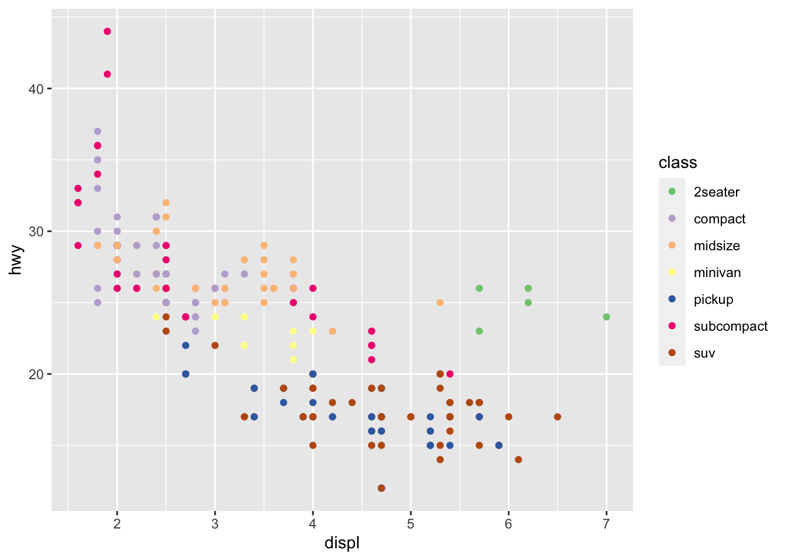
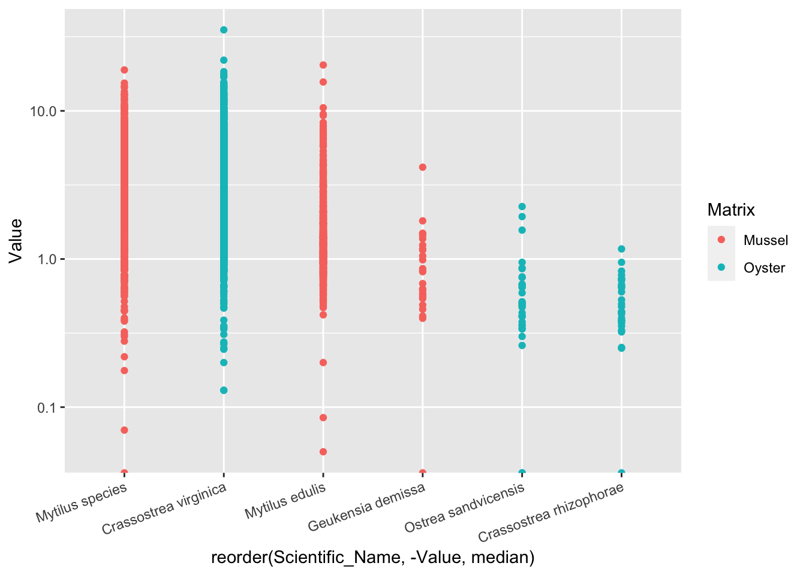

Chapter 2 ggplot2作图入门
2.0.1 ggplot基本理念
图层、映射
展开画布，一张空图
library(ggplot2)
ggplot()
数据有了，但还不知道要画什么图，仍然是一张空图
ggplot(mpg)
知道了谁是x
ggplot(mpg)+
aes(x = displ)知道了谁是y
ggplot(mpg)+
aes(x = displ)+
aes(y = hwy)
知道了要画什么图，图就有了
ggplot(mpg)+
aes(x = displ)+
aes(y = hwy) +
geom_point()
把aes()收进ggplot()，代码显得紧凑
ggplot(mpg, aes(x = displ, y = hwy))+
geom_point()
颜色映射到变量class，
ggplot(mpg, aes(x = displ, y = hwy, color = class))+
geom_point()
颜色映射放在ggplot里，会管住所有图层
ggplot(mpg, aes(x = displ, y = hwy, color = class))+
geom_point()+
geom_smooth()## `geom_smooth()` using method = 'loess' and formula 'y ~ x'颜色映射放在geom_point()里，只能管住geom_point()图层，对其他图层不起作用
ggplot(mpg, aes(x = displ, y = hwy))+
geom_point(aes(color = class))
ggplot(mpg, aes(x = displ, y = hwy))+
geom_point(aes(color = class))+
geom_smooth()## `geom_smooth()` using method = 'loess' and formula 'y ~ x'
2.1 以R自带的数据ToothGrowth为例
先用敲入代码?ToothGrowth来了解一下数据。
>The Effect of Vitamin C on Tooth Growth in Guinea Pigs (豚鼠)
> Description
> The response is the length of odontoblasts (cells responsible for tooth growth) in 60 guinea pigs. Each animal received one of three dose levels of vitamin C (0.5, 1, and 2 mg/day) by one of two delivery methods, orange juice or ascorbic acid (a form of vitamin C and coded as VC).
Format
A data frame with 60 observations on 3 variables.
[,1] len numeric Tooth length .red[第1列是数值变量，牙齿长度]
[,2] supp factor Supplement type (VC or OJ) .red[第2列是因子，补充剂类型，维C还是橙汁]
[,3] dose numeric Dose in milligrams/day .red[第3列是数值变量，补充剂的剂量]
References Crampton, E. W. (1947). The growth of the odontoblast of the incisor teeth as a criterion of vitamin C intake of the guinea pig. The Journal of Nutrition, 33(5), 491–504. doi: 10.1093/jn/33.5.491.
##了解一下ToothGrowth的内容
先用head()来看看数据长什么样：
head(ToothGrowth)## len supp dose
## 1 4.2 VC 0.5
## 2 11.5 VC 0.5
## 3 7.3 VC 0.5
## 4 5.8 VC 0.5
## 5 6.4 VC 0.5
## 6 10.0 VC 0.5再用str()具体了解一下数据概况：
str(ToothGrowth)## 'data.frame': 60 obs. of 3 variables:
## $ len : num 4.2 11.5 7.3 5.8 6.4 10 11.2 11.2 5.2 7 ...
## $ supp: Factor w/ 2 levels "OJ","VC": 2 2 2 2 2 2 2 2 2 2 ...
## $ dose: num 0.5 0.5 0.5 0.5 0.5 0.5 0.5 0.5 0.5 0.5 ...2.2 开始作图
- 使用
ggplot()作图，需先加载ggplot2程序包
- 可以略去“
x=”，“y=”，使代码更简洁；第1个数默认给x，第2个默认给y
library(ggplot2) #加载ggplot2包
ggplot(ToothGrowth, aes(x=dose, y=len))+
geom_point()#简洁代码：
ggplot(ToothGrowth, aes(dose, len))+
geom_point()
2.3 用颜色”color=”区分不同处理
- 将颜色（
color）映射（mapping）到补充剂类别（supp）上，即用不同颜色区分“VC”和“橙汁”数据
ggplot(ToothGrowth, aes(x=dose, y=len, color=supp))+
geom_point() 2.4 用形状”shape=”进一步区分不同处理
- 将点的形状映射到补充剂类别上，即用不同形状区分“VC”和“橙汁”数据
- 黑白打印、色盲友好
ggplot(ToothGrowth, aes(x=dose, y=len, color=supp,shape=supp))+
geom_point() 2.5 用”stat_summary()”添加平均值
- 我们喜欢看平均值
ggplot(ToothGrowth, aes(x=dose, y=len,
color=supp, shape=supp))+
geom_point()+
stat_summary(geom="line", fun="mean")]
2.6 用”stat_summary()”添加平均值
- 去掉散点，加上平均值对应的点
ggplot(ToothGrowth, aes(x=dose, y=len,
color=supp, shape=supp))+
#geom_point()+ #加上井号的作用：使这行代码变为注释，不运行
stat_summary(geom="line", fun="mean")+
stat_summary(geom="point", fun="mean")2.7 用”stat_summary()”添加误差棒
- 计算标准差的函数是
sd()；误差棒：errorbar
ggplot(ToothGrowth, aes(x=dose, y=len,
color=supp, shape=supp))+
stat_summary(geom="line", fun="mean")+
stat_summary(geom="point", fun="mean")+
stat_summary(geom="errorbar", fun.min=function(x) mean(x)-sd(x), fun.max=function(x) mean(x)+sd(x)) #自定义函数计算标准差；还有很多其他方法，目前这个方法最容易理解2.8 用”stat_summary()”添加误差棒
- 美化一下误差棒
ggplot(ToothGrowth, aes(x=dose, y=len,
color=supp, shape=supp))+
stat_summary(geom="line", fun="mean")+
stat_summary(geom="point", fun="mean")+
stat_summary(geom="errorbar", fun.min=function(x) mean(x)-sd(x), fun.max=function(x) mean(x)+sd(x), width=0.1) #把误差棒变窄，试试改为0我的数据不是这种格式啊!
| supp | dose | mean | sd |
|---|---|---|---|
| OJ | 0.5 | 13.23 | 4.46 |
| OJ | 1.0 | 22.70 | 3.91 |
| OJ | 2.0 | 26.06 | 2.66 |
| VC | 0.5 | 7.98 | 2.75 |
| VC | 1.0 | 16.77 | 2.52 |
| VC | 2.0 | 26.14 | 4.80 |
2.9 甚至是这样的
| supp…1 | dose…2 | mean…3 | sd…4 | supp…5 | dose…6 | mean…7 | sd…8 |
|---|---|---|---|---|---|---|---|
| OJ | 0.5 | 13.23 | 4.46 | VC | 0.5 | 7.98 | 2.75 |
| OJ | 1.0 | 22.70 | 3.91 | VC | 1.0 | 16.77 | 2.52 |
| OJ | 2.0 | 26.06 | 2.66 | VC | 2.0 | 26.14 | 4.80 |
## 这样的数据不方便统计分析，以后别这样了
- 左边的长表格格式整齐，R可以直接处理，但缺点是丢失了原始信息
- 右边的宽表格R不能直接处理（可以转化，之后课程会讲）
2.11 Tidy Data 整齐数据
Tidy data is data where:
Each variable is in a column. .red[每1列对应1个变量]
Each observation is a row. .red[每1行对应1个样本、1次观察]
Each value is a cell. .red[每1格包含1个值]
阅读材料：What is “Tidy Data?” https://www.r-bloggers.com/what-is-tidy-data
2.11.1 修改细节，使之规范
ggplot(ToothGrowth, aes(x=dose, y=len,
color=supp, shape=supp))+
theme_bw()+ #使用黑白主题，默认的是灰色主题
stat_summary(geom="line", fun="mean")+
stat_summary(geom="point", fun="mean")+
stat_summary(geom="errorbar", fun.min=function(x) mean(x)-sd(x), fun.max=function(x) mean(x)+sd(x), width=0.1)+
labs(x="Dose (mg/day)", #x轴标签
y="Tooth length (mm)", #y轴标签
color="Supplement", #颜色标签
shape="Supplement")+ #形状标签，与颜色的一致
scale_y_continuous(limits=c(0, NA))+ #y轴取值范围
theme(legend.position=c(0.8, 0.2), #图例的位置，左下角为(0,0),右上角为(1,1)
legend.background = element_blank(), #使图例方框背景透明
legend.key = element_blank()) #使图例符号背景透明##ggasve()保存
- 保存下来的图片显示质量比预览的效果更好一些
ggsave("tooth_1.png", width=280/90, height=224/90, dpi=600)2.12 当然，用“均值+标准差”格式的数据也可以作图
将此数据命名为d_tooth
| supp | dose | mean | sd |
|---|---|---|---|
| OJ | 0.5 | 13.23 | 4.46 |
| OJ | 1.0 | 22.70 | 3.91 |
| OJ | 2.0 | 26.06 | 2.66 |
| VC | 0.5 | 7.98 | 2.75 |
| VC | 1.0 | 16.77 | 2.52 |
| VC | 2.0 | 26.14 | 4.80 |
d_tooth可以通过以下代码得到：
library(dplyr)
d_tooth <- ToothGrowth %>%
group_by(supp, dose) %>%
summarise_at(vars(len), funs(mean, sd))## Warning: `funs()` was deprecated in dplyr 0.8.0.
## Please use a list of either functions or lambdas:
##
## # Simple named list:
## list(mean = mean, median = median)
##
## # Auto named with `tibble::lst()`:
## tibble::lst(mean, median)
##
## # Using lambdas
## list(~ mean(., trim = .2), ~ median(., na.rm = TRUE))
## This warning is displayed once every 8 hours.
## Call `lifecycle::last_lifecycle_warnings()` to see where this warning was generated.2.13 当然，用“均值+标注差”格式的数据也可以作图
- 用
geom_line()画折线；geom_errorbar()画误差棒
ggplot(d_tooth, aes(x=dose, y=mean,
color=supp, shape=supp))+
theme_bw()+
geom_point()+ #画点
geom_line()+ #画线
geom_errorbar(aes(ymin=mean-sd, ymax=mean+sd), width=0.1)+ #画误差棒，注意误差棒的上下限需用aes()映射到mean和sd上
labs(x="Dose (mg/day)",
y="Tooth length (mm)",
color=NULL, #去掉了颜色标签
shape=NULL)+ #去掉了形状标签
scale_y_continuous(limits=c(0, NA))+
theme(legend.position=c(0.8, 0.2),
legend.background = element_blank(),
legend.key = element_blank()) 2.14 用geom_col()画柱状图
- 不要用
geom_bar()画柱状图–不是不可以，只是不是按你想的那样
ggplot(d_tooth, aes(x=dose, y=mean, color=supp))+
geom_col()+
geom_errorbar(aes(ymin=mean-sd, ymax=mean+sd), width=0.1)这不是我们想要的
2.14.2 若有多组柱子，需要dodge让他们错开，否则默认stack堆叠
ggplot(d_tooth, aes(x=dose, y=mean, fill=supp))+
geom_col(position="dodge")+
geom_errorbar(aes(ymin=mean-sd, ymax=mean+sd), width=0.1)2.15 修改细节，使之规范
ggplot(d_tooth, aes(x=factor(dose), y=mean, fill=supp))+
theme_bw()+
geom_col(position="dodge", width = 0.7)+
geom_errorbar(aes(ymin=mean-sd, ymax=mean+sd, color=supp), width=0.1, position=position_dodge(width=0.7))+
labs(x=expression("Dose (mg"~d^"-1"*")"),
y="Tooth length (mm)",
fill=NULL, color=NULL)+
theme(legend.position=c(0.1, 0.86),
legend.background = element_blank(),
legend.key = element_blank())
##柱状图完成，ggasve()保存
- 除了默认的颜色土一点，基本达到发表的要求了（颜色以后我们专题讨论）
ggsave("tooth_2.png", width=316/90, height=232/90, dpi=600)2.16 直接用Tidy Data（ToothGrowth）作柱状图
ggplot(ToothGrowth, aes(x=factor(dose), y=len, fill=supp))+
theme_bw()+
stat_summary(geom="col", fun="mean", position="dodge", width = 0.7)+
stat_summary(geom="errorbar", fun.min=function(x) mean(x)-sd(x), fun.max=function(x) mean(x)+sd(x), aes(color=supp), width=0.1, position=position_dodge(width=0.7))+
labs(x=expression("Dose (mg"~d^"-1"*")"),
y="Tooth length (mm)",
fill=NULL, color=NULL)+
theme(legend.position=c(0.1, 0.86),
legend.background = element_blank(),
legend.key = element_blank())2.17 用geom_boxplot()画箱式图
ggplot(ToothGrowth, aes(dose, len, color=supp))+
geom_boxplot()- 问题出在哪：
dose是连续变量（numeric格式），不适合boxplot，需先转化为factor
2.18 用factor()将数值变量转化为因子
ggplot(ToothGrowth, aes(factor(dose), len, color=supp))+
geom_boxplot()##修饰细节，使之规范
ggplot(ToothGrowth, aes(factor(dose), len, color=supp))+
theme_bw()+
geom_boxplot()+
labs(x=expression("Dose (mg"~d^"-1"*")"),
y="Tooth length (mm)", color=NULL)+
theme(legend.position=c(0.1, 0.86),
legend.background = element_blank(),
legend.key = element_blank())2.19 要点小结
| 图 | 函数 |
|---|---|
| 点 | geom_point() |
| 线 | geom_line() |
| 柱 | geom_col()推荐； geom_bar() |
| 箱 | geom_boxplot() |
| 误差棒 | geom_errorbar(aes(ymin=mean-sd, ymax=mean+sd)) |
| 统计-误差棒 | stat_summary(geom="errorbar", fun.min=function(x) mean(x)-sd(x), fun.max=function(x) mean(x)+sd(x)) |
| 统计-均值点 | stat_summary(geom="point", fun="mean") |
| 统计-均值线 | stat_summary(geom="line", fun="mean") |
2.21 进阶：拟合及结果可视化
- R自带的另一套数据
DNase> Elisa assay of DNase
> Description
> The DNase data frame has 176 rows and 3 columns of data obtained during development of an ELISA assay for the recombinant protein DNase in rat serum.
Source
Davidian, M. and Giltinan, D. M. (1995) Nonlinear Models for Repeated Measurement Data, Chapman & Hall (section 5.2.4, p. 134
###这套数据和我们研究中遇到的数据很类似。用ELISA方法测定大鼠血清中的DNA酶，得到酶浓度和吸光度数据。实验做了11次，每次测定有平行样。
2.22 先用head()和str()来查看数据
head(DNase)## Grouped Data: density ~ conc | Run
## Run conc density
## 1 1 0.04882812 0.017
## 2 1 0.04882812 0.018
## 3 1 0.19531250 0.121
## 4 1 0.19531250 0.124
## 5 1 0.39062500 0.206
## 6 1 0.39062500 0.215str(DNase)## Classes 'nfnGroupedData', 'nfGroupedData', 'groupedData' and 'data.frame': 176 obs. of 3 variables:
## $ Run : Ord.factor w/ 11 levels "10"<"11"<"9"<..: 4 4 4 4 4 4 4 4 4 4 ...
## $ conc : num 0.0488 0.0488 0.1953 0.1953 0.3906 ...
## $ density: num 0.017 0.018 0.121 0.124 0.206 0.215 0.377 0.374 0.614 0.609 ...
## - attr(*, "formula")=Class 'formula' language density ~ conc | Run
## .. ..- attr(*, ".Environment")=<environment: R_EmptyEnv>
## - attr(*, "labels")=List of 2
## ..$ x: chr "DNase concentration"
## ..$ y: chr "Optical density"
## - attr(*, "units")=List of 1
## ..$ x: chr "(ng/ml)"注意：Run虽然是数字，类型却是factor，因此后面facet时可以直接操作，而无需转化为factor。
2.23 散点图是我们对数据进行探索分析的法宝
library(ggplot2)
ggplot(DNase, aes(conc, density))+
geom_point()这个数据让你想起了什么？有点像酶反应里的米氏动力学。确定分析方向：用米氏方程去拟合数据
2.24 均值+标准差（换一种方法）
ggplot(DNase, aes(conc, density))+
geom_point(stat="summary", fun="mean")+
geom_errorbar(stat="summary",
fun.min=function(x) mean(x)-sd(x),
fun.max=function(x) mean(x)+sd(x), width=0.2)2.25 对比两种等价的作图方法
| 方法1 | 方法2 |
|---|---|
geom_errorbar(stat="summary",...) |
stat_summary(geom="errorbar",...) |
geom_point(stat="summary",...) |
stat_summary(geom="point",...) |
geom_line(stat="summary",...) |
stat_summary(geom="line",...) |
| … | … |
2.26 nls()非线性拟合米氏方程：手动提取拟合结果
米氏方程： \(V=\frac{V\text{max}\times C}{K_\text{M}+C}\)
非线性拟合
拟合前，仔细观察原始数据，运用你的智慧大致判断一下Vmax和KM的值
nls(density ~ conc * Vmax/(KM + conc), data=DNase, start=list(Vmax=2, KM=6) )## Nonlinear regression model
## model: density ~ conc * Vmax/(KM + conc)
## data: DNase
## Vmax KM
## 2.280 3.682
## residual sum-of-squares: 0.4192
##
## Number of iterations to convergence: 6
## Achieved convergence tolerance: 5.139e-06- 手动赋值
Vmax <- 2.280
KM <- 3.6822.27 nls()非线性拟合米氏方程：自动提取拟合结果-1
- 将拟合结果存入
fit
fit <- nls(density ~ conc * Vmax/(KM + conc), data=DNase, start=list(Vmax=2, KM=6) )- 查看结果
summary(fit)##
## Formula: density ~ conc * Vmax/(KM + conc)
##
## Parameters:
## Estimate Std. Error t value Pr(>|t|)
## Vmax 2.28032 0.02189 104.16 <2e-16 ***
## KM 3.68241 0.08677 42.44 <2e-16 ***
## ---
## Signif. codes: 0 '***' 0.001 '**' 0.01 '*' 0.05 '.' 0.1 ' ' 1
##
## Residual standard error: 0.04909 on 174 degrees of freedom
##
## Number of iterations to convergence: 6
## Achieved convergence tolerance: 5.139e-062.28 nls()非线性拟合米氏方程：自动提取拟合结果-2
- 查看都储存了哪些信息
names(summary(fit)) ## [1] "formula" "residuals" "sigma" "df" "cov.unscaled"
## [6] "call" "convInfo" "control" "na.action" "coefficients"
## [11] "parameters"- 提取我们需要的参数拟合值
summary(fit)$coefficients## Estimate Std. Error t value Pr(>|t|)
## Vmax 2.280318 0.02189237 104.16041 1.073541e-158
## KM 3.682409 0.08677038 42.43855 1.032031e-93Vmax <- summary(fit)$coefficients[1]
KM <- summary(fit)$coefficients[2]2.29 生成画拟合线所需的数据
- 生成数据
fit_x <- seq(0, 14, length.out=100) #生成100个x，涵盖原始数据范围
fit_y <- Vmax * fit_x /(KM + fit_x) #将x和参数值代入米氏方程，计算y
d_fit <- data.frame(conc=fit_x, density=fit_y) #注意命名和原数据保持一致，可以不一致，但一致的话画图更简单- 查看一下所生成的数据
head(d_fit)## conc density
## 1 0.0000000 0.00000000
## 2 0.1414141 0.08433162
## 3 0.2828283 0.16264812
## 4 0.4242424 0.23557091
## 5 0.5656566 0.30363863
## 6 0.7070707 0.367320532.30 添加拟合线
ggplot(DNase, aes(conc, density))+
geom_point(stat="summary", fun="mean")+
geom_errorbar(stat="summary",
fun.min=function(x) mean(x)-sd(x),
fun.max=function(x) mean(x)+sd(x), width=0.2)+
geom_line(data=d_fit) #不需要设定aes(x=,y=)，因为继承了第1行代码的设定；如果xy名字与原数据不一样，则需设定。2.31 修饰细节
ggplot(DNase, aes(conc, density))+
theme_bw()+
geom_line(data=d_fit, size=0.7, alpha=0.7, color="red2")+
geom_point(stat="summary", fun="mean", color="grey30", alpha=0.7)+
geom_errorbar(stat="summary", fun.min=function(x) mean(x)-sd(x), fun.max=function(x) mean(x)+sd(x), width=0.2)+
labs(x=expression("DNase concentration (ng"~mL^"-1"*")"),
y="Optical density")+
annotate(geom="text", x=10, y=0.5,label=expression(OD==frac(OD[max], italic(K)[M]+italic(C)))) # 添加公式## Warning in is.na(x): is.na() applied to non-(list or vector) of type
## 'expression'2.32 如何在图上添加数学公式？
annotate(geom="text", x=..., y=..., label=...)- .red[
?plotmath]查看各种公式的代码
- 例如：
| Syntax | Meaning | Syntax | Meaning | |
|---|---|---|---|---|
| x + y | x plus y | sqrt(x) | square root of x | |
| x - y | x minus y | x == y | x equals y | |
| x %+-% y | x plus or minus y | italic(x) | draw x in italic font | |
| x %.% y | x cdot y | alpha – omega | Greek symbols | |
| x[i] | x subscript i | frac(x, y) | x over y | |
| x^2 | x superscript 2 | … | … |
2.33 另一个探索数据的超级武器：分面facet
有两种分面：
- facet_wrap(~因子)：针对1个因子，1维分面
- facet_grid(因子1~因子2)：针对2个因子，2维分面
ggplot(DNase, aes(conc, density))+
geom_point()+
facet_wrap(~Run) # 针对Run这个因子分面- 每个Run都单独作图，数据趋势类似
- 每组数据可以单独拟合，看看参数的变异程度
2.34 运用for()循环语句，批量拟合11组数据
N <- length(unique(DNase$Run)) # 有几组数据？直译：不重复的Run这个向量的长度
Vmax_each <- numeric(N) #生成长度为N的向量，以备存储拟合值
KM_each <- numeric(N)
#运用循环语句，每次拟合1组数据
for (i in 1 : N) {
d_i <- subset(DNase, Run==i) #把第i组数据筛选出来
fit_i <- nls(density ~ conc * Vmax/(KM + conc), data=d_i, start=list(Vmax=2, KM=6) )
Vmax_each[i] <- summary(fit_i)$coefficients[1] #第i个拟合结果存入向量第i个位置
KM_each[i] <- summary(fit_i)$coefficients[2] #同上
}- 将拟合值存入数据表备用
d_Vmax_KM <- data.frame(Vmax_each, KM_each) ##查看一下11组拟合结果
d_Vmax_KM## Vmax_each KM_each
## 1 2.258552 4.021074
## 2 2.591009 4.305742
## 3 2.571666 4.120585
## 4 2.333150 4.227158
## 5 2.264528 3.725127
## 6 2.246484 3.380303
## 7 2.171841 3.264675
## 8 2.254738 3.727607
## 9 2.173733 3.423064
## 10 2.087056 3.032812
## 11 2.168591 3.413008mean(Vmax_each)## [1] 2.283759sd(Vmax_each)## [1] 0.1611077mean(KM_each)## [1] 3.69465sd(KM_each)## [1] 0.42682422.35 生成画11条拟合线的数据
fit_x_11 <- rep(seq(0, 14, length.out=100), times=11) #生成等间距x值100个，重复11次
Vmax_11 <- rep(Vmax_each, each=100) #复制Vmax，复制100份
KM_11 <- rep(KM_each, each=100) #复制KM，复制100份
fit_y_11 <- Vmax_11 * fit_x_11 /(KM_11 + fit_x_11) #将以上三者代入米氏方程，计算y（想象一下你熟悉的excel，操作其实是一样的）
Run <- rep(1:11, each=100) #复制Run编号，复制100份
d_fit_11 <- data.frame(conc=fit_x_11, density=fit_y_11, Run=Run)2.36 画11条拟合线
ggplot(DNase, aes(conc, density))+
geom_point()+
facet_wrap(~Run)+
geom_line(data=d_fit_11) # 把11条拟合线画上去2.37 修改细节
#把这11个Run从1到11重新排好顺序
DNase$Run <- factor(DNase$Run,
levels=c("1","2","3","4","5","6",
"7","8","9","10","11"))
d_fit_11$Run <- factor(d_fit_11$Run,
levels=c("1","2","3","4","5","6",
"7","8","9","10","11"))
ggplot(DNase, aes(conc, density))+
theme_bw()+
geom_point(alpha=0.6)+
facet_wrap(~Run)+
geom_line(data=d_fit_11, size=0.7, color="red2")+
labs(x=expression("DNase concentration (ng"~mL^"-1"*")"),
y="Optical density")| ## 图上各主题元素的修改方法 参考此网页：https://ggplot2.tidyverse.org/reference/theme.html |
|---|
| ## 要点小结 |
理解两种等价的作图方式(若有困难，选一种你觉得容易理解的记住)
- geom_xxx(stat="summary") == stat_summary(geom="xxx") |
添加拟合线
- nls()非线性拟合
- summary()查看、提取拟合结果
- seq()，rep()生成作图数据的有力工具 |
添加数学公式
- annotate() 往图上添加公式、文字
- ?plotmath 查看数学公式对应的代码 |
facet分面功能：数据分析的世界因此而美好 |
for()循环语句：把重复的工作交给电脑 |
| # 颜色的使用 |
| ## 颜色的使用 |
| * 离散变量-自动配色 * 离散变量-手动配色 * 连续变量-自动配色 * 连续变量-手动配色 |
## 离散变量-自动配色
scale_color_brewer(palette=...)
scale_fill_brewer(palette=...) |
r p1 <- ggplot(mpg, aes(displ, hwy, color = class))+ geom_point() p1 |
 |
r p2 <- ggplot(mpg, aes(class, fill = class))+ geom_bar() p2 |
 |
### 查看R系统自带配色
用?scale_color_brewer查询 |
| * 点图–使用各种自动配色:以mpg数据为例 Qualitative（定性色） Accent, Dark2, Paired, Pastel1, Pastel2, Set1, Set2, Set3 更适合于连续变量。适用于热图、等高线图、地图等 |
| ```r library(RColorBrewer) |
| RColorBrewer::brewer.pal.info ``` |
## maxcolors category colorblind ## BrBG 11 div TRUE ## PiYG 11 div TRUE ## PRGn 11 div TRUE ## PuOr 11 div TRUE ## RdBu 11 div TRUE ## RdGy 11 div FALSE ## RdYlBu 11 div TRUE ## RdYlGn 11 div FALSE ## Spectral 11 div FALSE ## Accent 8 qual FALSE ## Dark2 8 qual TRUE ## Paired 12 qual TRUE ## Pastel1 9 qual FALSE ## Pastel2 8 qual FALSE ## Set1 9 qual FALSE ## Set2 8 qual TRUE ## Set3 12 qual FALSE ## Blues 9 seq TRUE ## BuGn 9 seq TRUE ## BuPu 9 seq TRUE ## GnBu 9 seq TRUE ## Greens 9 seq TRUE ## Greys 9 seq TRUE ## Oranges 9 seq TRUE ## OrRd 9 seq TRUE ## PuBu 9 seq TRUE ## PuBuGn 9 seq TRUE ## PuRd 9 seq TRUE ## Purples 9 seq TRUE ## RdPu 9 seq TRUE ## Reds 9 seq TRUE ## YlGn 9 seq TRUE ## YlGnBu 9 seq TRUE ## YlOrBr 9 seq TRUE ## YlOrRd 9 seq TRUE |
r RColorBrewer::display.brewer.all() |
 |
r RColorBrewer::brewer.pal.info |
## maxcolors category colorblind ## BrBG 11 div TRUE ## PiYG 11 div TRUE ## PRGn 11 div TRUE ## PuOr 11 div TRUE ## RdBu 11 div TRUE ## RdGy 11 div FALSE ## RdYlBu 11 div TRUE ## RdYlGn 11 div FALSE ## Spectral 11 div FALSE ## Accent 8 qual FALSE ## Dark2 8 qual TRUE ## Paired 12 qual TRUE ## Pastel1 9 qual FALSE ## Pastel2 8 qual FALSE ## Set1 9 qual FALSE ## Set2 8 qual TRUE ## Set3 12 qual FALSE ## Blues 9 seq TRUE ## BuGn 9 seq TRUE ## BuPu 9 seq TRUE ## GnBu 9 seq TRUE ## Greens 9 seq TRUE ## Greys 9 seq TRUE ## Oranges 9 seq TRUE ## OrRd 9 seq TRUE ## PuBu 9 seq TRUE ## PuBuGn 9 seq TRUE ## PuRd 9 seq TRUE ## Purples 9 seq TRUE ## RdPu 9 seq TRUE ## Reds 9 seq TRUE ## YlGn 9 seq TRUE ## YlGnBu 9 seq TRUE ## YlOrBr 9 seq TRUE ## YlOrRd 9 seq TRUE |
r rownames(RColorBrewer::brewer.pal.info) |
## [1] "BrBG" "PiYG" "PRGn" "PuOr" "RdBu" "RdGy" ## [7] "RdYlBu" "RdYlGn" "Spectral" "Accent" "Dark2" "Paired" ## [13] "Pastel1" "Pastel2" "Set1" "Set2" "Set3" "Blues" ## [19] "BuGn" "BuPu" "GnBu" "Greens" "Greys" "Oranges" ## [25] "OrRd" "PuBu" "PuBuGn" "PuRd" "Purples" "RdPu" ## [31] "Reds" "YlGn" "YlGnBu" "YlOrBr" "YlOrRd" |
| ### 使用R系统自带配色 |
r p1 + scale_color_brewer(palette="Set1") |
r p2 + scale_fill_brewer(palette="Set1") |
r p1 + scale_color_brewer(palette="Set3") |
r p2 + scale_fill_brewer(palette="Set3") |
r p1 + scale_color_brewer(palette = "Accent") |
|  |
r p2 + scale_fill_brewer(palette = "Accent") |
r p1 + scale_color_brewer(palette = "Dark2") |
r p2 + scale_fill_brewer(palette = "Dark2") |
r p1+ scale_color_brewer(palette = "BrBG") |
r p2 + scale_fill_brewer(palette = "BrBG") |
### 色盲友好的viridis配色
?scale_fill_viridis_d |
r p1 + scale_color_viridis_d() |
r p2 + scale_fill_viridis_d() |
r p1 + scale_color_viridis_d(option = "A") |
r p2 + scale_fill_viridis_d(option = "A") |
r p1 + scale_color_viridis_d(option = "B") |
 |
r p2 + scale_fill_viridis_d(option = "B") |
r p1 + scale_color_viridis_d(option = "F") |
r p2 + scale_fill_viridis_d(option = "F") |
* 离散变量-手动配色
scale_color_manual(values=...)
scale_fill_manual(values=...) |
r p1 + scale_color_manual(values=c("red","orange","yellow","green","blue","grey","black")) |
r p2 + scale_fill_manual(values=c("red","orange","yellow","green","blue","grey","black")) |
### 如何知道各种颜色的名称？colors() |
r colors() |
## [1] "white" "aliceblue" "antiquewhite" ## [4] "antiquewhite1" "antiquewhite2" "antiquewhite3" ## [7] "antiquewhite4" "aquamarine" "aquamarine1" ## [10] "aquamarine2" "aquamarine3" "aquamarine4" ## [13] "azure" "azure1" "azure2" ## [16] "azure3" "azure4" "beige" ## [19] "bisque" "bisque1" "bisque2" ## [22] "bisque3" "bisque4" "black" ## [25] "blanchedalmond" "blue" "blue1" ## [28] "blue2" "blue3" "blue4" ## [31] "blueviolet" "brown" "brown1" ## [34] "brown2" "brown3" "brown4" ## [37] "burlywood" "burlywood1" "burlywood2" ## [40] "burlywood3" "burlywood4" "cadetblue" ## [43] "cadetblue1" "cadetblue2" "cadetblue3" ## [46] "cadetblue4" "chartreuse" "chartreuse1" ## [49] "chartreuse2" "chartreuse3" "chartreuse4" ## [52] "chocolate" "chocolate1" "chocolate2" ## [55] "chocolate3" "chocolate4" "coral" ## [58] "coral1" "coral2" "coral3" ## [61] "coral4" "cornflowerblue" "cornsilk" ## [64] "cornsilk1" "cornsilk2" "cornsilk3" ## [67] "cornsilk4" "cyan" "cyan1" ## [70] "cyan2" "cyan3" "cyan4" ## [73] "darkblue" "darkcyan" "darkgoldenrod" ## [76] "darkgoldenrod1" "darkgoldenrod2" "darkgoldenrod3" ## [79] "darkgoldenrod4" "darkgray" "darkgreen" ## [82] "darkgrey" "darkkhaki" "darkmagenta" ## [85] "darkolivegreen" "darkolivegreen1" "darkolivegreen2" ## [88] "darkolivegreen3" "darkolivegreen4" "darkorange" ## [91] "darkorange1" "darkorange2" "darkorange3" ## [94] "darkorange4" "darkorchid" "darkorchid1" ## [97] "darkorchid2" "darkorchid3" "darkorchid4" ## [100] "darkred" "darksalmon" "darkseagreen" ## [103] "darkseagreen1" "darkseagreen2" "darkseagreen3" ## [106] "darkseagreen4" "darkslateblue" "darkslategray" ## [109] "darkslategray1" "darkslategray2" "darkslategray3" ## [112] "darkslategray4" "darkslategrey" "darkturquoise" ## [115] "darkviolet" "deeppink" "deeppink1" ## [118] "deeppink2" "deeppink3" "deeppink4" ## [121] "deepskyblue" "deepskyblue1" "deepskyblue2" ## [124] "deepskyblue3" "deepskyblue4" "dimgray" ## [127] "dimgrey" "dodgerblue" "dodgerblue1" ## [130] "dodgerblue2" "dodgerblue3" "dodgerblue4" ## [133] "firebrick" "firebrick1" "firebrick2" ## [136] "firebrick3" "firebrick4" "floralwhite" ## [139] "forestgreen" "gainsboro" "ghostwhite" ## [142] "gold" "gold1" "gold2" ## [145] "gold3" "gold4" "goldenrod" ## [148] "goldenrod1" "goldenrod2" "goldenrod3" ## [151] "goldenrod4" "gray" "gray0" ## [154] "gray1" "gray2" "gray3" ## [157] "gray4" "gray5" "gray6" ## [160] "gray7" "gray8" "gray9" ## [163] "gray10" "gray11" "gray12" ## [166] "gray13" "gray14" "gray15" ## [169] "gray16" "gray17" "gray18" ## [172] "gray19" "gray20" "gray21" ## [175] "gray22" "gray23" "gray24" ## [178] "gray25" "gray26" "gray27" ## [181] "gray28" "gray29" "gray30" ## [184] "gray31" "gray32" "gray33" ## [187] "gray34" "gray35" "gray36" ## [190] "gray37" "gray38" "gray39" ## [193] "gray40" "gray41" "gray42" ## [196] "gray43" "gray44" "gray45" ## [199] "gray46" "gray47" "gray48" ## [202] "gray49" "gray50" "gray51" ## [205] "gray52" "gray53" "gray54" ## [208] "gray55" "gray56" "gray57" ## [211] "gray58" "gray59" "gray60" ## [214] "gray61" "gray62" "gray63" ## [217] "gray64" "gray65" "gray66" ## [220] "gray67" "gray68" "gray69" ## [223] "gray70" "gray71" "gray72" ## [226] "gray73" "gray74" "gray75" ## [229] "gray76" "gray77" "gray78" ## [232] "gray79" "gray80" "gray81" ## [235] "gray82" "gray83" "gray84" ## [238] "gray85" "gray86" "gray87" ## [241] "gray88" "gray89" "gray90" ## [244] "gray91" "gray92" "gray93" ## [247] "gray94" "gray95" "gray96" ## [250] "gray97" "gray98" "gray99" ## [253] "gray100" "green" "green1" ## [256] "green2" "green3" "green4" ## [259] "greenyellow" "grey" "grey0" ## [262] "grey1" "grey2" "grey3" ## [265] "grey4" "grey5" "grey6" ## [268] "grey7" "grey8" "grey9" ## [271] "grey10" "grey11" "grey12" ## [274] "grey13" "grey14" "grey15" ## [277] "grey16" "grey17" "grey18" ## [280] "grey19" "grey20" "grey21" ## [283] "grey22" "grey23" "grey24" ## [286] "grey25" "grey26" "grey27" ## [289] "grey28" "grey29" "grey30" ## [292] "grey31" "grey32" "grey33" ## [295] "grey34" "grey35" "grey36" ## [298] "grey37" "grey38" "grey39" ## [301] "grey40" "grey41" "grey42" ## [304] "grey43" "grey44" "grey45" ## [307] "grey46" "grey47" "grey48" ## [310] "grey49" "grey50" "grey51" ## [313] "grey52" "grey53" "grey54" ## [316] "grey55" "grey56" "grey57" ## [319] "grey58" "grey59" "grey60" ## [322] "grey61" "grey62" "grey63" ## [325] "grey64" "grey65" "grey66" ## [328] "grey67" "grey68" "grey69" ## [331] "grey70" "grey71" "grey72" ## [334] "grey73" "grey74" "grey75" ## [337] "grey76" "grey77" "grey78" ## [340] "grey79" "grey80" "grey81" ## [343] "grey82" "grey83" "grey84" ## [346] "grey85" "grey86" "grey87" ## [349] "grey88" "grey89" "grey90" ## [352] "grey91" "grey92" "grey93" ## [355] "grey94" "grey95" "grey96" ## [358] "grey97" "grey98" "grey99" ## [361] "grey100" "honeydew" "honeydew1" ## [364] "honeydew2" "honeydew3" "honeydew4" ## [367] "hotpink" "hotpink1" "hotpink2" ## [370] "hotpink3" "hotpink4" "indianred" ## [373] "indianred1" "indianred2" "indianred3" ## [376] "indianred4" "ivory" "ivory1" ## [379] "ivory2" "ivory3" "ivory4" ## [382] "khaki" "khaki1" "khaki2" ## [385] "khaki3" "khaki4" "lavender" ## [388] "lavenderblush" "lavenderblush1" "lavenderblush2" ## [391] "lavenderblush3" "lavenderblush4" "lawngreen" ## [394] "lemonchiffon" "lemonchiffon1" "lemonchiffon2" ## [397] "lemonchiffon3" "lemonchiffon4" "lightblue" ## [400] "lightblue1" "lightblue2" "lightblue3" ## [403] "lightblue4" "lightcoral" "lightcyan" ## [406] "lightcyan1" "lightcyan2" "lightcyan3" ## [409] "lightcyan4" "lightgoldenrod" "lightgoldenrod1" ## [412] "lightgoldenrod2" "lightgoldenrod3" "lightgoldenrod4" ## [415] "lightgoldenrodyellow" "lightgray" "lightgreen" ## [418] "lightgrey" "lightpink" "lightpink1" ## [421] "lightpink2" "lightpink3" "lightpink4" ## [424] "lightsalmon" "lightsalmon1" "lightsalmon2" ## [427] "lightsalmon3" "lightsalmon4" "lightseagreen" ## [430] "lightskyblue" "lightskyblue1" "lightskyblue2" ## [433] "lightskyblue3" "lightskyblue4" "lightslateblue" ## [436] "lightslategray" "lightslategrey" "lightsteelblue" ## [439] "lightsteelblue1" "lightsteelblue2" "lightsteelblue3" ## [442] "lightsteelblue4" "lightyellow" "lightyellow1" ## [445] "lightyellow2" "lightyellow3" "lightyellow4" ## [448] "limegreen" "linen" "magenta" ## [451] "magenta1" "magenta2" "magenta3" ## [454] "magenta4" "maroon" "maroon1" ## [457] "maroon2" "maroon3" "maroon4" ## [460] "mediumaquamarine" "mediumblue" "mediumorchid" ## [463] "mediumorchid1" "mediumorchid2" "mediumorchid3" ## [466] "mediumorchid4" "mediumpurple" "mediumpurple1" ## [469] "mediumpurple2" "mediumpurple3" "mediumpurple4" ## [472] "mediumseagreen" "mediumslateblue" "mediumspringgreen" ## [475] "mediumturquoise" "mediumvioletred" "midnightblue" ## [478] "mintcream" "mistyrose" "mistyrose1" ## [481] "mistyrose2" "mistyrose3" "mistyrose4" ## [484] "moccasin" "navajowhite" "navajowhite1" ## [487] "navajowhite2" "navajowhite3" "navajowhite4" ## [490] "navy" "navyblue" "oldlace" ## [493] "olivedrab" "olivedrab1" "olivedrab2" ## [496] "olivedrab3" "olivedrab4" "orange" ## [499] "orange1" "orange2" "orange3" ## [502] "orange4" "orangered" "orangered1" ## [505] "orangered2" "orangered3" "orangered4" ## [508] "orchid" "orchid1" "orchid2" ## [511] "orchid3" "orchid4" "palegoldenrod" ## [514] "palegreen" "palegreen1" "palegreen2" ## [517] "palegreen3" "palegreen4" "paleturquoise" ## [520] "paleturquoise1" "paleturquoise2" "paleturquoise3" ## [523] "paleturquoise4" "palevioletred" "palevioletred1" ## [526] "palevioletred2" "palevioletred3" "palevioletred4" ## [529] "papayawhip" "peachpuff" "peachpuff1" ## [532] "peachpuff2" "peachpuff3" "peachpuff4" ## [535] "peru" "pink" "pink1" ## [538] "pink2" "pink3" "pink4" ## [541] "plum" "plum1" "plum2" ## [544] "plum3" "plum4" "powderblue" ## [547] "purple" "purple1" "purple2" ## [550] "purple3" "purple4" "red" ## [553] "red1" "red2" "red3" ## [556] "red4" "rosybrown" "rosybrown1" ## [559] "rosybrown2" "rosybrown3" "rosybrown4" ## [562] "royalblue" "royalblue1" "royalblue2" ## [565] "royalblue3" "royalblue4" "saddlebrown" ## [568] "salmon" "salmon1" "salmon2" ## [571] "salmon3" "salmon4" "sandybrown" ## [574] "seagreen" "seagreen1" "seagreen2" ## [577] "seagreen3" "seagreen4" "seashell" ## [580] "seashell1" "seashell2" "seashell3" ## [583] "seashell4" "sienna" "sienna1" ## [586] "sienna2" "sienna3" "sienna4" ## [589] "skyblue" "skyblue1" "skyblue2" ## [592] "skyblue3" "skyblue4" "slateblue" ## [595] "slateblue1" "slateblue2" "slateblue3" ## [598] "slateblue4" "slategray" "slategray1" ## [601] "slategray2" "slategray3" "slategray4" ## [604] "slategrey" "snow" "snow1" ## [607] "snow2" "snow3" "snow4" ## [610] "springgreen" "springgreen1" "springgreen2" ## [613] "springgreen3" "springgreen4" "steelblue" ## [616] "steelblue1" "steelblue2" "steelblue3" ## [619] "steelblue4" "tan" "tan1" ## [622] "tan2" "tan3" "tan4" ## [625] "thistle" "thistle1" "thistle2" ## [628] "thistle3" "thistle4" "tomato" ## [631] "tomato1" "tomato2" "tomato3" ## [634] "tomato4" "turquoise" "turquoise1" ## [637] "turquoise2" "turquoise3" "turquoise4" ## [640] "violet" "violetred" "violetred1" ## [643] "violetred2" "violetred3" "violetred4" ## [646] "wheat" "wheat1" "wheat2" ## [649] "wheat3" "wheat4" "whitesmoke" ## [652] "yellow" "yellow1" "yellow2" ## [655] "yellow3" "yellow4" "yellowgreen" |
r colors()[1:9] |
## [1] "white" "aliceblue" "antiquewhite" "antiquewhite1" ## [5] "antiquewhite2" "antiquewhite3" "antiquewhite4" "aquamarine" ## [9] "aquamarine1" |
r scales::show_col(colors()[100:108]) |
### 如何预览各种颜色？ scales::show_col() |
r library(scales) show_col("springgreen") |
r show_col(c("springgreen","snow4","violetred","skyblue1", "steelblue1","navy", "lightsteelblue3","turquoise2","rosybrown")) |
r show_col(colors()[10:20]) |
| ### 如何设置出谐调、美观、科学的配色？ 去配色程序包里找，去配色网站找，去艺术品里找，去大自然找。 |
| 查看颜色的程序包 |
r RColorBrewer::brewer.pal(n=8, name = "Set1") |
## [1] "#E41A1C" "#377EB8" "#4DAF4A" "#984EA3" "#FF7F00" "#FFFF33" "#A65628" ## [8] "#F781BF" |
r mycol <- RColorBrewer::brewer.pal(n=8, name = "Set1") mycol |
## [1] "#E41A1C" "#377EB8" "#4DAF4A" "#984EA3" "#FF7F00" "#FFFF33" "#A65628" ## [8] "#F781BF" |
| ```r show_col(mycol) |
| brewer.pal(8, “Set1”) #提取“Set1”配色中的颜色代码 ``` |
## [1] "#E41A1C" "#377EB8" "#4DAF4A" "#984EA3" "#FF7F00" "#FFFF33" "#A65628" ## [8] "#F781BF" |
r show_col(brewer.pal(8, "Set1")) |
ggsci 配色程序包 |
| ```r library(ggsci) |
| ggsci::pal_aaas()(10) ``` |
## [1] "#3B4992FF" "#EE0000FF" "#008B45FF" "#631879FF" "#008280FF" "#BB0021FF" ## [7] "#5F559BFF" "#A20056FF" "#808180FF" "#1B1919FF" |
r show_col(ggsci::pal_aaas()(10)) |
 |
r ggsci::pal_npg()(10) |
## [1] "#E64B35FF" "#4DBBD5FF" "#00A087FF" "#3C5488FF" "#F39B7FFF" "#8491B4FF" ## [7] "#91D1C2FF" "#DC0000FF" "#7E6148FF" "#B09C85FF" |
r show_col(ggsci::pal_npg()(10)) |
 |
r show_col(ggsci::pal_simpsons()(10)) |
 |
r ggsci::pal_aaas()(10) |
## [1] "#3B4992FF" "#EE0000FF" "#008B45FF" "#631879FF" "#008280FF" "#BB0021FF" ## [7] "#5F559BFF" "#A20056FF" "#808180FF" "#1B1919FF" |
r show_col(ggsci::pal_aaas()(10)) |
r p1 + scale_color_aaas() |
r p2 + scale_fill_aaas() |
 |
r p1 + scale_color_npg() |
r p2 + scale_fill_npg() |
r p1 + scale_color_manual(values=ggsci::pal_aaas()(10)) |
 |
r p2 + scale_fill_manual(values=ggsci::pal_aaas()(10)) |
 |
r ggsci::pal_d3()(10) |
## [1] "#1F77B4FF" "#FF7F0EFF" "#2CA02CFF" "#D62728FF" "#9467BDFF" "#8C564BFF" ## [7] "#E377C2FF" "#7F7F7FFF" "#BCBD22FF" "#17BECFFF" |
r show_col(ggsci::pal_d3()(10)) |
r ggsci::pal_futurama()(10) |
## [1] "#FF6F00FF" "#C71000FF" "#008EA0FF" "#8A4198FF" "#5A9599FF" "#FF6348FF" ## [7] "#84D7E1FF" "#FF95A8FF" "#3D3B25FF" "#ADE2D0FF" |
r show_col(ggsci::pal_futurama()(10)) |
r ggsci::pal_gsea()(10) |
## [1] "#4500ACFF" "#2600D1FF" "#6B58EEFF" "#8787FFFF" "#C6C0FFFF" "#D4D4FFFF" ## [7] "#FFBFE5FF" "#FF8888FF" "#FF707FFF" "#FF5959FF" |
r show_col(ggsci::pal_gsea()(10)) |
r ggsci::pal_nejm()(10) |
## Warning: This manual palette can handle a maximum of 8 values. You have supplied ## 10. |
## [1] "#BC3C29FF" "#0072B5FF" "#E18727FF" "#20854EFF" "#7876B1FF" "#6F99ADFF" ## [7] "#FFDC91FF" "#EE4C97FF" NA NA |
r show_col(ggsci::pal_nejm()(10)) |
## Warning: This manual palette can handle a maximum of 8 values. You have supplied ## 10. |
r ggsci::pal_npg()(10) |
## [1] "#E64B35FF" "#4DBBD5FF" "#00A087FF" "#3C5488FF" "#F39B7FFF" "#8491B4FF" ## [7] "#91D1C2FF" "#DC0000FF" "#7E6148FF" "#B09C85FF" |
r show_col(ggsci::pal_npg()(10)) |
| 去大自然里找，去生活里找 |
r pal_cee <- c("#DA1718", "#CE9F9F", "#36536D", "#5092E1", "#D8E8F9", "#526B13", "#97B325", "#876454", "#C0C0CC") show_col(pal_cee) |
r p1 + scale_color_manual(values=pal_cee) |
r p2 + scale_fill_manual(values=pal_cee) |
| 去艺术品里找 |
r pal_qljs <- c("#1F394D", "#EEC979", "#C4CBC2", "#5A6683", "#BB9555", "#CDE5BC", "#356183", "#24211F", "#E9C3BC") show_col(pal_qljs) |
r p1 + scale_color_manual(values=pal_qljs) |
r p2 + scale_fill_manual(values = pal_qljs) |
| * 网站配色 https://coolors.co/ 5种颜色一组，地址栏直接获取Hex颜色代码 |
| https://medialab.github.io/iwanthue/ 颜色数量较多时自动配色 |
| * Pantone配色 |
| ```r Pantone <- c(“#34558b,” “#d13b40,” “#ffaf12,” “#4ec5a5,” “#565d47,” “#798fa8,” “#fd823e,” “#117893,” “#f0daa4,” “#eaac9d,” “#a2553a,” “#72617d,” “#b49c73,” “#3b3d4b,” “#eff0f1,” “#a09d9c,” “#191970,” “#bc243c,” “#585ea6,” “#F5DF4D”) |
| show_col(Pantone) ``` |
## 连续变量-自动配色
scale_color_distiller(palette=...)
scale_fill_distiller(palette=...) |
| 代码：颜色映射到连续变量 scale_fill_distiller(palette=…) 利用系统的配色方案插值得到连续配色，常用 |
| ```r d2 <- tidyr::crossing(x = seq(-10, 10, 0.1), y = seq(-10, 10, 0.1)) %>% mutate(z = sin(sin(x * (sin(y) - cos(x)))) - cos(cos(y * (cos(x) - sin(y))))) |
| p <- ggplot(d2, aes(x, y)) + geom_raster(aes(fill = z)) p ``` |
r p <- p + coord_equal() p |
| Sequential（渐变色） Blues, BuGn, BuPu, GnBu, Greens, Greys, Oranges, OrRd, PuBu, PuBuGn, PuRd, Purples, RdPu, Reds, YlGn, YlGnBu, YlOrBr, YlOrRd |
| Diverging（分裂色） BrBG, PiYG, PRGn, PuOr, RdBu, RdGy, RdYlBu, RdYlGn, Spectral |
scale_color_brewer(palette =...) 使用自动配色方案，常用
scale_color_manual(values = c(...)) 手动配色，常用 |
| ### 自动配色 |
r RColorBrewer::brewer.pal.info |
## maxcolors category colorblind ## BrBG 11 div TRUE ## PiYG 11 div TRUE ## PRGn 11 div TRUE ## PuOr 11 div TRUE ## RdBu 11 div TRUE ## RdGy 11 div FALSE ## RdYlBu 11 div TRUE ## RdYlGn 11 div FALSE ## Spectral 11 div FALSE ## Accent 8 qual FALSE ## Dark2 8 qual TRUE ## Paired 12 qual TRUE ## Pastel1 9 qual FALSE ## Pastel2 8 qual FALSE ## Set1 9 qual FALSE ## Set2 8 qual TRUE ## Set3 12 qual FALSE ## Blues 9 seq TRUE ## BuGn 9 seq TRUE ## BuPu 9 seq TRUE ## GnBu 9 seq TRUE ## Greens 9 seq TRUE ## Greys 9 seq TRUE ## Oranges 9 seq TRUE ## OrRd 9 seq TRUE ## PuBu 9 seq TRUE ## PuBuGn 9 seq TRUE ## PuRd 9 seq TRUE ## Purples 9 seq TRUE ## RdPu 9 seq TRUE ## Reds 9 seq TRUE ## YlGn 9 seq TRUE ## YlGnBu 9 seq TRUE ## YlOrBr 9 seq TRUE ## YlOrRd 9 seq TRUE |
r p + scale_fill_distiller(palette = "BrBG") |
r p + scale_fill_distiller(palette = "PiYG") |
 |
r p + scale_fill_distiller(palette = "Accent") |
r p + scale_fill_distiller(palette = "PuBu") |
系统自带色盲友好viridis配色 |
r p + scale_fill_viridis_c(option = "A") |
r p + scale_fill_viridis_c(option = "B") |
r p + scale_fill_viridis_c(option = "C") |
r p + scale_fill_viridis_c(option = "D") |
r p + scale_fill_viridis_c(option = "E") |
r p + scale_fill_viridis_c(option = "F") |
 |
r p + scale_fill_viridis_c(option = "G") |
r p + scale_fill_viridis_c(option = "H") |
r p + scale_fill_viridis_c(option = "I") |
## Warning in viridisLite::viridis(n, alpha, begin, end, direction, option): Option ## 'I' does not exist. Defaulting to 'viridis'. |
 |
scico程序包，科学的渐变色 |
| ```r library(scico) |
| scico::scico_palette_names() ``` |
## [1] "acton" "bam" "bamako" "bamO" "batlow" "batlowK" "batlowW" ## [8] "berlin" "bilbao" "broc" "brocO" "buda" "bukavu" "cork" ## [15] "corkO" "davos" "devon" "fes" "grayC" "hawaii" "imola" ## [22] "lajolla" "lapaz" "lisbon" "nuuk" "oleron" "oslo" "roma" ## [29] "romaO" "tofino" "tokyo" "turku" "vanimo" "vik" "vikO" |
r scico::scale_fill_scico(palette = "buda") |
## <ScaleContinuous> ## Range: ## Limits: 0 -- 1 |
r p + scale_fill_scico(palette = "buda") |
r p + scale_fill_scico(palette = "batlow") |
 |
r scico_names <- scico::scico_palette_names() scico_names |
## [1] "acton" "bam" "bamako" "bamO" "batlow" "batlowK" "batlowW" ## [8] "berlin" "bilbao" "broc" "brocO" "buda" "bukavu" "cork" ## [15] "corkO" "davos" "devon" "fes" "grayC" "hawaii" "imola" ## [22] "lajolla" "lapaz" "lisbon" "nuuk" "oleron" "oslo" "roma" ## [29] "romaO" "tofino" "tokyo" "turku" "vanimo" "vik" "vikO" |
r p + scale_fill_scico(palette = scico_names[1]) |
r p + scale_fill_scico(palette = scico_names[2]) |
r p + scale_fill_scico(palette = scico_names[3]) |
r p + scale_fill_scico(palette = scico_names[4]) |
r p + scale_fill_scico(palette = scico_names[5]) |
r p + scale_fill_scico(palette = scico_names[6]) |
r p + scale_fill_scico(palette = scico_names[7]) |
r p + scale_fill_scico(palette = scico_names[8]) |
r p + scale_fill_scico(palette = scico_names[9]) |
r p + scale_fill_scico(palette = scico_names[10]) |
r p + scale_fill_scico(palette = scico_names[11]) |
 |
r p + scale_fill_scico(palette = scico_names[12]) |
 |
r p + scale_fill_scico(palette = scico_names[13]) |
r p + scale_fill_scico(palette = scico_names[14]) |
r p + scale_fill_scico(palette = scico_names[15]) |
r p + scale_fill_scico(palette = scico_names[16]) |
## 连续变量-手动配色
颜色映射到连续变量
scale_color_gradient(low=..., high=..., na.value=) 用两种颜色形成梯度
scale_color_continuous(low=..., high=...) 同上
scale_color_gradient2(low=..., mid=..., high=...)用三种颜色形成梯度 |
r p + scale_fill_gradient(low = "white", high = "black", na.value = "grey96") |
scale_color_gradientn(colors=...) 用n种颜色形成梯度 |
| heat.colors(8) terrain.colors(8) |
r p + scale_fill_gradientn(colors=heat.colors(8), na.value="white") |
| ## 颜色RGB码的转化 |
r rgb(34, 108, 224, max=255) |
## [1] "#226CE0" |
| ## 推荐阅读： 科技论文中颜色的误用 Crameri, F., Shephard, G. E., & Heron, P. J. (2020). The misuse of colour in science communication. Nature communications, 11(1), 1-10. https://www.nature.com/articles/s41467-020-19160-7 |
| 如何配色 The Elements of Choosing Colors for Great Data Visualization in R http://www.sthda.com/english/wiki/the-elements-of-choosing-colors-for-great-data-visualization-in-r |
| 配色工具 R package colortools https://rpubs.com/gaston/colortools |
| 颜色使用需考虑什么 What to consider when choosing colors for data visualization https://blog.datawrapper.de/colors/ |
| 检测配色是否色盲友好 HOW TO STIMULATE COLORBLINDNESS VISION IN R FIGURES https://www.datanovia.com/en/blog/how-to-stimulate-colorblindness-vision-in-r-figures/ |
| 关于颜色的选择：定性vs定量，单渐变色vs双渐变色，分类vs不分类 https://blog.datawrapper.de/which-color-scale-to-use-in-data-vis/ |
### 拼图程序包 cowplot |
r p1 |
 |
r p2 |
| ```r library(cowplot) |
| cowplot::plot_grid(p1, p2) ``` |
r cowplot::plot_grid(p1, p2, p1, p2,ncol=2, labels=c("a","b","c","d")) |
r cowplot::plot_grid(p1, p2) |
 |
r cowplot::plot_grid(p1, p2, ncol=1) |
r cowplot::plot_grid(p1, p2, labels = c("a","b")) |
r cowplot::plot_grid(p1, p2, rel_widths = c(1,2)) |
| # 数据整理 |
## 数据整理
### 3个常用的程序包dplyr，tidyr，reshape2 |
Package | 常用函数
————|——————————————–
dplyr | select()，filter()，mutate()，arrange()
|group_by()，summarise()
| join()，%>%（pipe运算符）
tidyr | pivot_longer，pivot_wider()
reshape2 | melt()（老但好用） |
## dplyr名字的含义 |
| https://github.com/tidyverse/dplyr/issues/1857 |
| hadley commented on 26 May 2016 - The d is for dataframes, the plyr is to evoke pliers. Pronounce however you like. |
| (kartiksubbarao?) - kartiksubbarao commented on 30 Oct 2017 The precursor to dplyr was called plyr. The ‘ply’ in plyr comes from an expansion/refining of the various “apply” functions in R as part of the “split-apply-combine” model/strategy. Here’s a good slideset that provides more insight into the plyr name: |
| https://www.slideshare.net/hadley/plyr-one-data-analytic-strategy |
## tidyverse大程序包 |
1. ggplot2，dplyr，tidyr等都是tidyverse系列的
2. 运行install.packages("tidyverse")可以一并安装 |
### tidyverse包括以下程序包： |
## [1] "broom" "cli" "crayon" "dbplyr" ## [5] "dplyr" "dtplyr" "forcats" "googledrive" ## [9] "googlesheets4" "ggplot2" "haven" "hms" ## [13] "httr" "jsonlite" "lubridate" "magrittr" ## [17] "modelr" "pillar" "purrr" "readr" ## [21] "readxl" "reprex" "rlang" "rstudioapi" ## [25] "rvest" "stringr" "tibble" "tidyr" ## [29] "xml2" "tidyverse" |
| ## 案例分析：美国贻贝观察数据 |
| ### NOAA’s National Status and Trends### ### NS&T is comprised of three nationwide programs, Benthic Surveillance, .red[Mussel Watch] and Bioeffects that are designed to describe the current status of, and detect changes in, the environmental quality of our nation’s .red[estuarine and coastal waters] through environmental monitoring, assessment and related research.### |
| 数据来源：https://products.coastalscience.noaa.gov/collections/ltmonitoring/nsandt/ |
| ### 初步了解数据 |
| - 已从NOAA网站下载数据，将其命名为.red[“MusselWatch20170718.csv”] |
| - 读取数据 |
r d0 <- read.csv("data/MusselWatch20170718.csv") |
| - 多少行，多少列? |
r dim(d0) |
## [1] 127743 16 |
| 有127743行，用excel处理会很棘手 |
| - 各列的名称是什么？ |
r names(d0) |
## [1] "Study" "NST_Site" "General_Location" ## [4] "Specific_Location" "Sample_ID" "Latitude" ## [7] "Longitude" "Fiscal_Year" "Collection_Date" ## [10] "Matrix" "Scientific_Name" "Method" ## [13] "Parameter" "Value" "Qualifier" ## [16] "Unit" |
| ### 测定了哪些类型的样品？ |
r unique(d0$Matrix) |
## [1] "Sediment" "Water" "Fish Filet" ## [4] "Fish Liver" "Sediment Trap" "Nepheloid" ## [7] "Oyster" "Coral" "Mussel" ## [10] "Fish Muscle" "Clam" "Cockles" ## [13] "Conch" "Zebra Mussel Tissue" "Starfish" ## [16] "Flatfish" "Shrimp" "Fish" ## [19] "Lobster" |
| ### 测定了哪些污染物？ |
r unique(d0$Parameter) |
## [1] "Aluminum" "Antimony" ## [3] "Arsenic" "Cadmium" ## [5] "Chromium" "Copper" ## [7] "Iron" "Lead" ## [9] "Manganese" "Mercury" ## [11] "Nickel" "Selenium" ## [13] "Silver" "Tin" ## [15] "Zinc" "Silicon" ## [17] "Thallium" "Methyl Mercury" ## [19] "Aluminum - Units in Wet Weight" "Antimony - Units in Wet Weight" ## [21] "Arsenic - Units in Wet Weight" "Barium - Units in Wet Weight" ## [23] "Beryllium - Units in Wet Weight" "Cadmium - Units in Wet Weight" ## [25] "Chromium - Units in Wet Weight" "Cobalt - Units in Wet Weight" ## [27] "Copper - Units in Wet Weight" "Iron - Units in Wet Weight" ## [29] "Lead - Units in Wet Weight" "Lithium - Units in Wet Weight" ## [31] "Manganese - Units in Wet Weight" "Mercury - Units in Wet Weight" ## [33] "Nickel - Units in Wet Weight" "Selenium - Units in Wet Weight" ## [35] "Silver - Units in Wet Weight" "Thallium - Units in Wet Weight" ## [37] "Tin - Units in Wet Weight" "Uranium - Units in Wet Weight" ## [39] "Vanadium - Units in Wet Weight" "Zinc - Units in Wet Weight" |
| ### 数据的单位是什么？ |
r unique(d0$Unit) |
## [1] "micrograms per dry gram " "micrograms per wet gram" |
| 注意：有两种单位，后续分析时需小心，不能把不同单位的数据混在一起分析 |
| ## 提出问题 |
| ### 1. 牡蛎和贻贝谁的Cd浓度高？ ### 2. Zn浓度高的牡蛎，是否Cd浓度也高？ |
2.39 整理数据：用select()筛选数据的特定列
2.40 数据整理： 用filter()筛选数据的特定行
2.40.1 筛选出牡蛎和贻贝的数据
d_oy.mu <- d %>%
filter(Matrix %in% c("Oyster", "Mussel")) #<<注意：筛选多个变量用”%in%“，筛选单一变量用”==“。
2.41 注意区分filter()和select()
filter() 用于选择特定的行（即样品、观察)
select() 用于选择特定的列（即变量)
2.41.1 筛选出Cd的数据
d_oy.mu_Cd <- d_oy.mu %>%
filter( Parameter == "Cadmium")- 再检查数据
dim(d_oy.mu_Cd)## [1] 3579 6unique(d_oy.mu_Cd$Parameter)## [1] "Cadmium"unique(d_oy.mu_Cd$Scientific_Name)## [1] "Crassostrea virginica" "Mytilus edulis"
## [3] "Mytilus species" "Ostrea sandvicensis"
## [5] "Geukensia demissa" "Crassostrea rhizophorae"
## [7] "Crassostrea gigas"发现牡蛎、贻贝共有7个物种，我们把问题1细化到物种
2.41.2 可以作个图看看数据了
- 作散点图
library(ggplot2)
ggplot(d_oy.mu_Cd, aes(Scientific_Name, Value))+
geom_point()###修改成对数坐标###
当数据之间差异很大时，可以考虑用对数坐标，使数据均匀分散开
ggplot(d_oy.mu_Cd, aes(Scientific_Name, Value))+
geom_point()+
scale_y_log10()## Warning: Transformation introduced infinite values in continuous y-axis2.41.3 去掉只有2个数据点的物种
d_Cd <- d_oy.mu_Cd %>% filter(Scientific_Name != "Crassostrea gigas")
ggplot(d_Cd, aes(Scientific_Name, Value))+
geom_point()+
scale_y_log10()+
theme(axis.text.x = element_text(angle=20, hjust=1)) #x轴上名称太长，旋转20°以便显示## Warning: Transformation introduced infinite values in continuous y-axis2.41.4 研究问题1：牡蛎、贻贝，谁的Cd浓度高？
用不同颜色区分牡蛎和贻贝
ggplot(d_Cd, aes(Scientific_Name, Value, color=Matrix))+
geom_point()+
scale_y_log10()+
theme(axis.text.x = element_text(angle=20, hjust=1))## Warning: Transformation introduced infinite values in continuous y-axis2.41.5 按中位值排序
原先的顺序无规律，不便于传达信息
ggplot(d_Cd, aes(reorder(Scientific_Name, -Value, median), Value, color=Matrix))+
geom_point()+
scale_y_log10()+
theme(axis.text.x = element_text(angle=20, hjust=1))## Warning: Transformation introduced infinite values in continuous y-axis
2.41.6 按中位值排序
用到了
reorder()函数按照中位数降序排列，你可以reorder()看看这个函数的用法，思考：按照均值升序如何排列？还有另外一种更容易理解的手动排序方法，即从图上观察高低顺序，然后按顺序排列。这种方法很常用。代码如下：
d_Cd$Scientific_Name <- factor(
d_Cd$Scientific_Name,
levels = c(
"Mytilus species",
"Crassostrea virginica",
"Mytilus edulis",
"Geukensia demissa",
"Ostrea sandvicensis",
"Crassostrea rhizophorae"))2.41.7 修饰细节
- 数据点较多时，可以用小提琴图展现数据的分布，用抖动点充分展现原始数据
- 颜色的使用考虑色盲读者，考虑黑白打印
library(ggbeeswarm) #作蜂群图需要
ggplot(d_Cd, aes(reorder(Scientific_Name, -Value, median), Value, color=Matrix))+
theme_bw()+
geom_violin(draw_quantiles = 0.5)+ #小提琴图
#geom_beeswarm(cex = 0.4, shape = ".", size = 3, alpha = 0.5)+ #蜂群图
geom_jitter(shape=".", width = 0.2)+
scale_y_log10()+
annotation_logticks(sides="l")+ #对数刻度
labs(x=NULL,
y=expression("Cd concentration ("*mu*g~g^"-1"*"dry wt.)"),
color=NULL)+
theme(axis.text.x=element_text(face="italic", angle=20, hjust=1))+ #x轴斜体，转角
theme(legend.position=c(1,1),
legend.justification = c(1,1),
legend.background = element_blank(),
legend.key = element_blank())+ #调整图例位置、背景
theme(panel.grid.minor = element_blank())+ #去掉次要网格
scale_color_viridis_d(begin=0, end=0.6) #颜色选择，色盲友好## Warning: Transformation introduced infinite values in continuous y-axis
## Transformation introduced infinite values in continuous y-axis## Warning: Removed 5 rows containing non-finite values (stat_ydensity).## Warning: Removed 5 rows containing missing values (geom_point).
问题1得到回答了吗？
###汇总：把数据整理和画图的全部操作串联
d0 %>%
select(Fiscal_Year, Matrix, Scientific_Name, Parameter, Value, Unit) %>%
filter(Matrix %in% c("Oyster", "Mussel")) %>%
filter(Parameter == "Cadmium") %>%
filter(Scientific_Name != "Crassostrea gigas") %>%
ggplot(aes(reorder(Scientific_Name, -Value, median), Value, color=Matrix))+ #注意这步，省略了data指定，默认使用上游输送来的数据
theme_bw()+
geom_violin(draw_quantiles = 0.5)+ #小提琴图
#geom_beeswarm(cex = 0.4, shape = ".", size = 3, alpha = 0.5)+ #蜂群图
scale_y_log10()+
annotation_logticks(sides="l")+ #对数刻度
labs(x=NULL,
y=expression("Cd concentration ("*mu*g~g^"-1"*"dry wt.)"),
color=NULL)+
theme(axis.text.x=element_text(face="italic", angle=20, hjust=1))+ #x轴斜体，转角
theme(legend.position=c(1,1),
legend.justification = c(1,1),
legend.background = element_blank(),
legend.key = element_blank())+ #调整图例位置、背景
theme(panel.grid.minor = element_blank())+ #去掉次要网格
scale_color_viridis_d(begin=0, end=0.6) #颜色选择，色盲友好 ## Warning: Transformation introduced infinite values in continuous y-axis## Warning: Removed 5 rows containing non-finite values (stat_ydensity).2.42 用group_by和summarise分组计算均值、标准差
- 按物种名（
Scientific_Name）分组，计算浓度（Value）的均值（mean）和标准差（sd）
d_Cd_mean <- d_Cd %>%
group_by(Scientific_Name) %>% #<<
summarise(mean = mean(Value), sd = sd(Value)) #<<–
- 查看计算结果
d_Cd_mean## # A tibble: 6 × 3
## Scientific_Name mean sd
## <fct> <dbl> <dbl>
## 1 Mytilus species 3.61 2.37
## 2 Crassostrea virginica 3.65 2.81
## 3 Mytilus edulis 1.69 1.52
## 4 Geukensia demissa 0.980 0.765
## 5 Ostrea sandvicensis 0.625 0.475
## 6 Crassostrea rhizophorae 0.527 0.237- 以上结果可用于作图，也可用于表格
2.43 研究问题2：
2.43.1 Zn浓度高的牡蛎，是否Cd浓度也高？
- 再来观察数据
Sample_ID可以作为样品配对的依据
names(d0)## [1] "Study" "NST_Site" "General_Location"
## [4] "Specific_Location" "Sample_ID" "Latitude"
## [7] "Longitude" "Fiscal_Year" "Collection_Date"
## [10] "Matrix" "Scientific_Name" "Method"
## [13] "Parameter" "Value" "Qualifier"
## [16] "Unit"2.43.2 整理数据
- 选择这些列：
Sample_ID,Fiscal_Year,Matrix,Scientific_Name,Parameter,Value,Unit
- 筛选出
Oyster的数据
- 筛选出
Cadmium和Zinc的数据
- 删去物种
Crassostrea gigas的数据（只有两条数据，缺乏代表性）
d_oy_Cd.Zn <- d0 %>%
select(Sample_ID,
Fiscal_Year,
Matrix,
Scientific_Name,
Parameter,
Value,
Unit) %>%
filter(Matrix == "Oyster" &
Parameter %in% c("Cadmium", "Zinc") &
Scientific_Name != "Crassostrea gigas") 2.43.3 查看整理好的数据
- 有哪些列？
names(d_oy_Cd.Zn)## [1] "Sample_ID" "Fiscal_Year" "Matrix" "Scientific_Name"
## [5] "Parameter" "Value" "Unit"- 测定了哪些污染物？
unique(d_oy_Cd.Zn$Parameter)## [1] "Cadmium" "Zinc"2.43.4 把数据切分成Cd数据、Zn数据
- 用
subset()切出Cd的数据
d_oy_Cd <- subset(d_oy_Cd.Zn, Parameter=="Cadmium")
dim(d_oy_Cd) # 1718条数据## [1] 1718 7- 用
subset()切出Zn的数据
d_oy_Zn <- subset(d_oy_Cd.Zn, Parameter=="Zinc")
dim(d_oy_Zn) # 也是1718条数据## [1] 1718 7两种金属的数据都是1718条，很可能是一一对应的。这需要一一核对两组数据的Sample_ID才能确定，那是很大的工作量。这种情况下，join系列函数就派上用场了。
2.43.5 运用inner_join()合并两套数据
- 当两组数据的
Sample_ID相同时，则合并在同一行
d_oy <-
inner_join(d_oy_Cd,
d_oy_Zn,
by = "Sample_ID",
suffix = c(".Cd", ".Zn"))- 查看一下数据, 还是1718列，1个也没丢失，说明两组数据确实一一对应
dim(d_oy) ## [1] 1718 13names(d_oy)## [1] "Sample_ID" "Fiscal_Year.Cd" "Matrix.Cd"
## [4] "Scientific_Name.Cd" "Parameter.Cd" "Value.Cd"
## [7] "Unit.Cd" "Fiscal_Year.Zn" "Matrix.Zn"
## [10] "Scientific_Name.Zn" "Parameter.Zn" "Value.Zn"
## [13] "Unit.Zn"2.43.6 join系列函数
inner_join()
return all rows from x where there are matching values in y, and all columns from x and y. If there are multiple matches between x and y, all combination of the matches are returned.left_join()
return all rows from x, and all columns from x and y. Rows in x with no match in y will have NA values in the new columns. If there are multiple matches between x and y, all combinations of the matches are returned.right_join()
return all rows from y, and all columns from x and y. Rows in y with no match in x will have NA values in the new columns. If there are multiple matches between x and y, all combinations of the matches are returned.
full_join()
return all rows and all columns from both x and y. Where there are not matching values, returns NA for the one missing.
阅读： https://dplyr.tidyverse.org/reference/join.html

2.43.8 使用双对数坐标
ggplot(d_oy, aes(Value.Cd, Value.Zn))+
geom_point()+
scale_x_log10()+
scale_y_log10()## Warning: Transformation introduced infinite values in continuous x-axis- 原始数据里有“0”值，取对数后产生负无穷大（-Inf）.作图时会产生警告信息，但不妨碍出图。在坐标轴上可以看到这些点，他们露出了一半。
2.43.9 按不同物种分面作图
ggplot(d_oy, aes(Value.Cd, Value.Zn))+
geom_point()+
scale_x_log10()+
scale_y_log10()+
facet_wrap(~Scientific_Name.Zn) # 用Scientific_Name.Cd也一样## Warning: Transformation introduced infinite values in continuous x-axis- 大部分数据都是关于Crassostrea virginica这种牡蛎的
2.43.10 添加拟合线，帮助判断趋势
ggplot(d_oy, aes(Value.Cd, Value.Zn))+
geom_point()+
scale_x_log10()+
scale_y_log10()+
facet_wrap(~Scientific_Name.Zn)+
geom_smooth(method="lm")## Warning: Transformation introduced infinite values in continuous x-axis
## Transformation introduced infinite values in continuous x-axis## `geom_smooth()` using formula 'y ~ x'## Warning: Removed 3 rows containing non-finite values (stat_smooth).- 大部分数据都是关于Crassostrea virginica这种牡蛎的
2.43.11 美化一下
ggplot(d_oy, aes(Value.Cd, Value.Zn, color= Scientific_Name.Zn))+
theme_bw()+
geom_point(shape=16, size=1/3, alpha=0.5)+
scale_x_log10()+
scale_y_log10()+
annotation_logticks(sides="bl")+
facet_wrap(~Scientific_Name.Zn)+
geom_smooth(method="lm", color="black")+
labs(x=expression("Cd concentration ("*mu*g~g^"-1"*")"),
y=expression("Zn concentration ("*mu*g~g^"-1"*")"))+
guides(color="none")+
theme(strip.text = element_text(face="italic"))+ #横幅上物种名用斜体
scale_color_viridis_d(end=0.6)## Warning: Transformation introduced infinite values in continuous x-axis
## Transformation introduced infinite values in continuous x-axis## `geom_smooth()` using formula 'y ~ x'## Warning: Removed 3 rows containing non-finite values (stat_smooth).2.44 要点小结
| 函数 | 功能 |
|---|---|
fliter() |
根据其值筛选行 |
select() |
根据其名筛选列 |
arrange() |
改变行的排序，从低到高排 |
arrange(desc()) |
… 从高到低排 |
mutate() |
基于现有变量进行计算，增加新的变量（类比excel里的C1=A1*B1) |
summarize() |
计算统计量（如均值、方差、中位数） |
pivot_longer() |
宽数据变长数据 |
pivot_wider() |
长数据变宽数据 |
melt() |
宽数据变长数据 |
left_join() |
合并数据，保留左侧全部的，右侧没有对应值的则填充NA |
inner_join() |
合并数据，保留共有的 |
| … | …. |
2.47 阅读：
Overview of dplyr https://dplyr.tidyverse.org/index.html
Introduction to dplyr https://dplyr.tidyverse.org/articles/dplyr.html